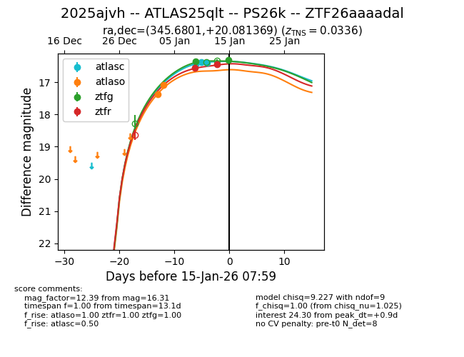
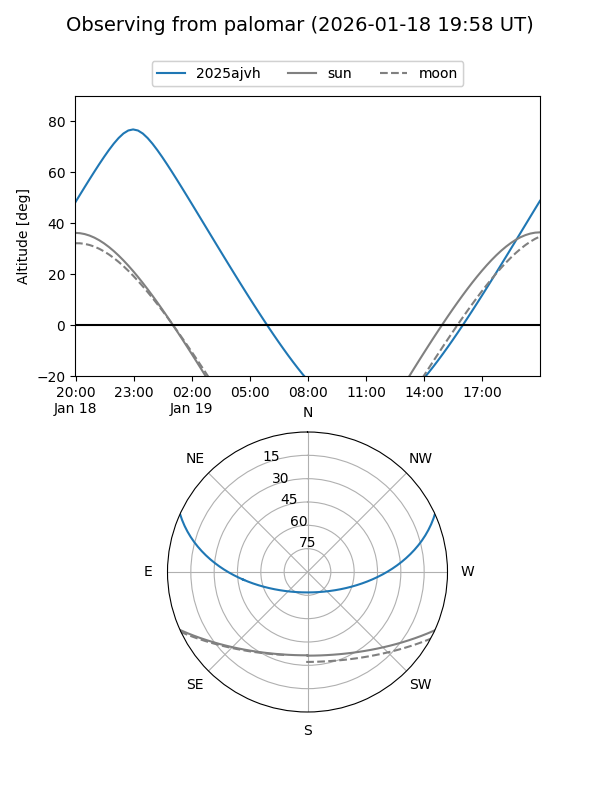
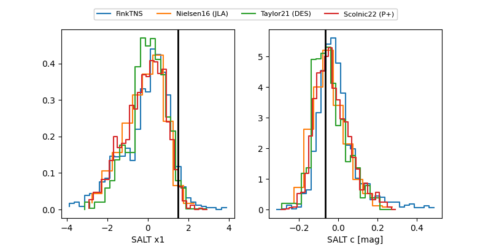

2025ajvh
Target 2025ajvh at 2026-01-19 02:51
Aliases and brokers:
FINK: link
Lasair: link
ALeRCE: link
TNS: link
YSE: link
alt names
ZTF26aaaadal (ztf,fink_ztf)
2025ajvh (tns,yse)
ATLAS25qlt (atlas)
PS26k (panstarrs)
Coordinates:
equatorial (ra, dec) = 345.6801,+20.08137
equatorial (HMS+DMS) = 23:02:43.22,+20:04:52.93
galactic (l, b) = (90.9318,-35.94586)
Flags:
confirmed ia
Photometry:
last atlasc=16.38, atlaso=17.09, ztfg=16.43, ztfr=16.42
4 atlasc, 2 atlaso, 3 ztfg, 3 ztfr detections
Lightcurve

Visibility


Additional plots
